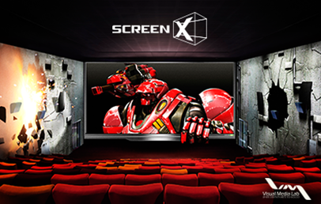
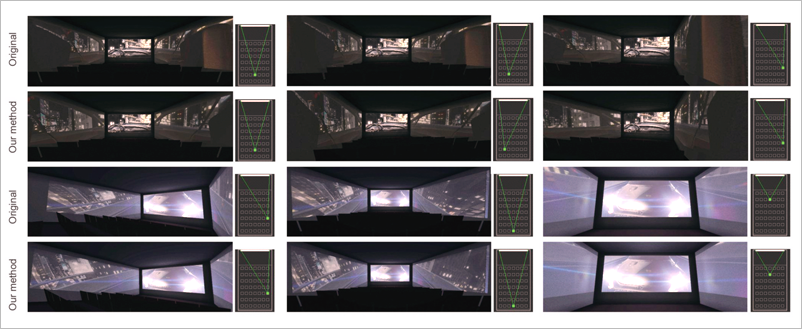

연구성과 10선
연구성과 10선
KAIST RESEARCH ACHIEVEMENTS
미래형 몰입 영화관 스크린 엑스
문화기술대학원 노준용
요약
스크린 엑스는 스토리텔링의 공간을 하나의 화면에서 3개의 화면으로 확장 시킨다. 이로 인해 영화 연출의 새로운 방식이 가능해 진다. 예를 들어 공포영화에서는 괴물이 옆면을 타고 극장의 뒷면으로부터 나타날 수 있다. 또한, 고속 자동차 추격전에서는, 차가 옆면을 통해 관객의 좌석을 추월하여 정면으로 돌진하는 장면의 연출도 가능하다. 지진 장면에서는 마치 극장의 옆면이 갈라지는 것 같은 착시 효과도 만들어 낼 수 있다. 비행기 추락 장면에서는 거대한 비행기가 정면 스크린의 테두리 밖으로 나오는 것 같은 효과도 줄 수 있다. 이렇게, 극장의 옆면을 활용한 콘텐츠 상영을 통해 관객들은 훨씬 더 몰입감있게 영화 감상을 즐기게 된다.
연구내용

지난 수 십년간, 컴퓨터 그래픽스 분야의 연구자들은 더욱 더 시각적으로 몰입감이 있는 경험을 영화를 보는 관객들에게 제공해 주기위해 노력해 왔다. 예를 들어, 진보된 그래픽스 기술들이 영화에 적용되어, 끊임없이 증가하는 관객의 기대에 부응해 눈을 앞도하는 장면을 포함하는 블록버스터 영화들이나 애니메이션 영화들의 제작을 가능하게 해주었다. 특히, 최근 들어서는 입체 기술이 접목되어 영화 장면들이 스크린을 벗어나 관객의 눈앞에 까지 온 것 같은 현실감을 주기도 한다. 입체 영화가 가져다 주는 깊이 감은 시각적 몰입감을 관객들에게 한층 더 효과적으로 느끼게 해주었다. 하지만, 입체 영화는 두 가지의 커다란 단점을 가진다. 영화 관람을 위해 입체 안경을 착용해야 한다는 것과, 시각적 피로감을 관객에게 줄 수 있다는 것이다. 스크린 엑스 기술은 이러한 입체 영화가 주는 단점들을 제거하면서 새로운 방식으로 관객들에게 한층 더 큰 몰입감을 가져다 주도록 설계되었다.
ScreenX Setup
어느 극장이나 정면 스크린뿐만 아니라 좌 우 양 벽면을 가지고 있다. 스크린 엑스 기술은 이 양쪽 벽면을 마치 스크린처럼 활용하여 영상을 투사한다. 각 벽면은 여러대의 프로젝터들에 의해 하나의 영상이 생성되도록, 논리적인 스크린의 역할을 한다. 각 프로젝터들에서 투사되는 영상들 간의 관계를 알아내고, 또 잘 정열하기위해, planar perspective transform 방식이 사용된다. 또한 인접한 프로젝터에서 투사되어 영상들이 중첩될 경우, 비선형 edge blending을 통해 자연스러운 색깔 변화를 만들어 낸다. 프로젝터들 간에 색감이 다를 경우 블랙 오프셋도 조절해 주며, 영상의 품질을 균일하게 하기 위해 색상이나 기하학적 보정도 적용 시켜 준다.측면 프로젝터로부터 나오는 빛이 관객의 눈에 들어가 불편함을 유발하게 하지 않도록 마스킹도 적용 시킨다. 셋업당시 한번의 캘리브레이션으로 이런 절차들을 수행하면 각 극장 환경에 최적화된 스크린 엑스 콘텐츠가 렌더링되어 생성된다. 그림 2는 스크린 엑스가 적용된 극장 환경의 예시를 보여준다.
 그림 2. 스크린 엑스 기술은 일반적인 영화관을(a) 몰입화된 극장으로(b) 변화시킨다. 이때,멀티 프로젝션 기술을 좌, 우 양쪽 벽면에 적용하여 극장의 삼면을 스크린처럼 활용한다. 극장의 구조를 변화시키지 않고 저가의 소수 프로젝터만을 사용하는 특징을 가진다.
그림 2. 스크린 엑스 기술은 일반적인 영화관을(a) 몰입화된 극장으로(b) 변화시킨다. 이때,멀티 프로젝션 기술을 좌, 우 양쪽 벽면에 적용하여 극장의 삼면을 스크린처럼 활용한다. 극장의 구조를 변화시키지 않고 저가의 소수 프로젝터만을 사용하는 특징을 가진다.
Optimized Immersive
Movie Viewing Experiences
스크린 엑스 기술은 관객이 어느 위치에서 영화를 관람하던 간에, 왜곡이 최소화 된 영상을 볼 수 있도록 설계 되어있다.(그림 3)는 이를 증명하기 위해, 기술이 적용된 영상과 원본 영상을 비교하여 보여준다. 세 개의 좌석을 임의로 고른 후, 그 관점에서 캡쳐된 영상들을 비교하였다. 원본 영상의 경우, 모든 세 좌석에서 perspective 왜곡이 관찰된다. 첫 번째와 두 번째 그림을 보면, 양 옆면 스크린의 앞 부분은 찌그러져 있고 뒷면은 늘어나 있다. 이러한 왜곡들은 몰입감을 저해할 요소로 작용할 수 있다. 두 번째 줄에서는, 기술이 접목된 예제를 보여준다. 세 경우 모두 그림들에서 왜곡이 줄어 있고, 명확히 perspecitve효과가 보인다. 세 번째 열의 그림은 좌석의 위치가 옆면 스크린에 굉장히 가까운 경우이다. 오른쪽 스크린의 경우 원본 그림을 알아보기가 힘들 정도이다. 이에 반해, 기술이 적용된 영상은 훨씬 더 고품질의 왜곡 없는 영상콘텐츠를 보여준다. 세 번째와 네 번째 줄은 또 다른 예시이다. 원본 영상에서 보이는 빌딩은 심하게 왜곡되어 있고 고가 도로는 아래쪽으로 굽어있다. 이에 반해 기술이 적용된 경우는 이러한 왜곡들이 훨씬 적어지고 영상의 품질이 향상된 것을 알 수 있다.
 그림 3. 원본 영상과 스크린 엑스 기술이 적용된 영상의 이미지 품질 비교
기대효과
스크린 엑스 기술은 극장의 현재 구조를 변화시키지않고 적용될 수 있기 때문에 현존하는 일반 극장들을 쉽게 스크린 엑스용 상영관으로 변화 시킬 수 있다.지금까지, 한국에 있는 50여개의 CJ-CGV 극장에 성공적으로 스크린 엑스 기술이 설치되었다. 그리고 이 숫자는 계속 증가하고 있다. 이에 따라, 수십편의 극장용 광고가 스크린 엑스 형태로 만들어져 관객에게 시연되고 있으며, 또 다른 수십편의 광고가 제작 중에있다. 30분 길이의 단편영화 The X가 스크린 엑스용으로 제작되어 부산 국제 영화제에 스크린 엑스 기술과 함께 선보였다. 극장용 장편 영화들도 스크린 엑스의 형태로 현재 제작 진행 중이다. CJ-CGV에 따르면 2014년부터는 동남아와 미국에 있는 극장에도 스크린 엑스 기술이 설치될 것이라고 한다.
연구지원
ㆍCJ-CGV
ㆍKAIstudio
연구실적
ㆍKBS, MBC, SBS, YTN, 조선일보 국내언론보도
ㆍThe Atlantic, Wall Street Journal, TV Tokyo 해외언론 보도
ㆍ2013 부산 국제 영화제 쇼케이스